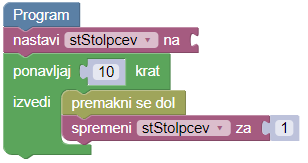

Pobarvaj s številko


Napiši program, kjer boš pomagal zmajčku pobarvati označena polja. Zmajček si pomaga s številkama pred sabo. Prvo število zmajčku pove, koliko vrstic mora pobarvati. Drugo število pa pove, koliko je stolpcev.
Število vrstic in število stolpcev si shrani v dve novi spremenljivki, ki ti bodo v pomoč pri reševanju zmajčkovega problema.

Namig: Naloga ima dva testa. Program mora delovati na obeh testih.